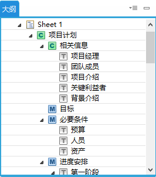
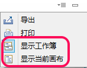
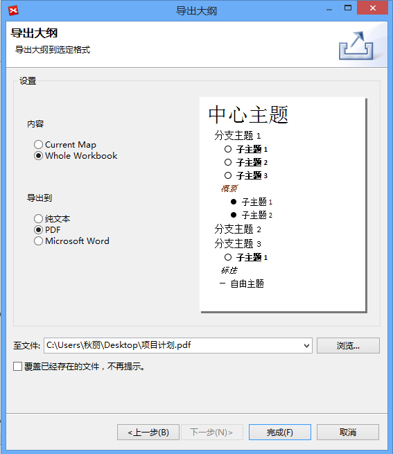

大纲视图
大纲视图是一个涵盖工作簿所有内容的树状视图，让您可以很快的了解当前图的大致内容。在大纲视图中，您还可以看见、修改下列内容:
- 主题: 您可以从大纲视图中将任一主题拖至当前图中，并且选择此操作是对目标主题的“复制”或者“移动”。
- 超链接: 超链接的具体内容也会被显示在大纲视图中。

显示工作簿或当前思维图的大纲在下拉菜单中，您可以选择显示整个工作簿还是仅当前画布的大纲。
- 显示工作簿: 点击显示工作簿的所有画布。
- 显示当前画布: 点击仅显示当前画布。

导出大纲从XMind 7始，支持导出大纲视图到Text/PDF/Microsoft Word文件格式。导出大纲:
- 点击大纲视图右上角下拉菜单的“导出”；
- 在接下来的对话框您可选择导出当前画布还是整个工作簿到Text/PDF/Microsoft Work文件格式；
- 选择导出位置并点击完成。

打印大纲XMind 7后您也可以打印您的大纲视图了。打印大纲: